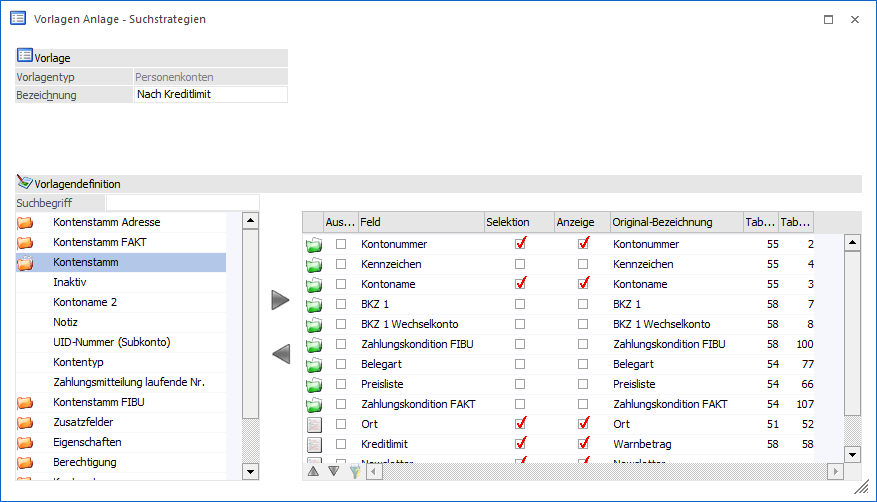
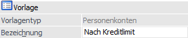
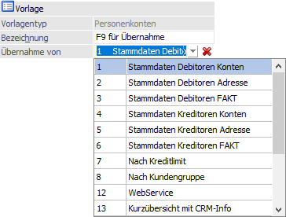
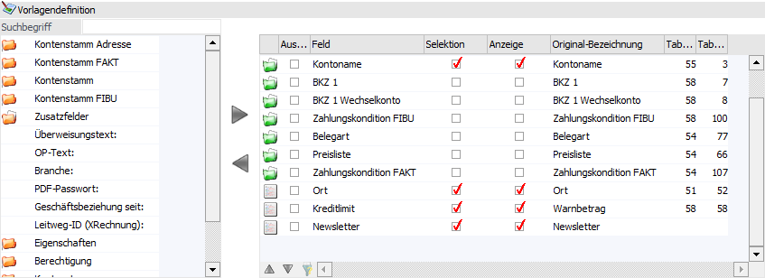
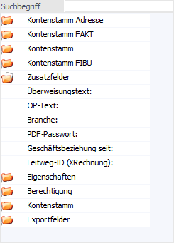
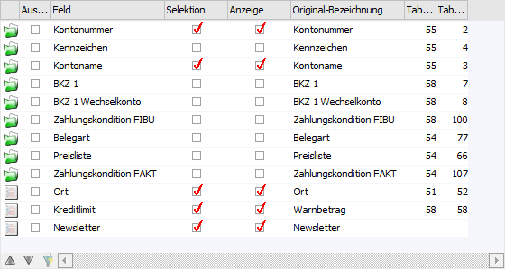
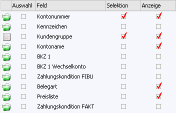
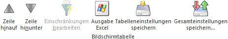

In diesem Programmbereich können bestehende Vorlage editiert oder neue Vorlagen definiert werden.

Im oberen Bereich sind die Basiseinstellungen der Vorlage zu finden. Darunter kann die Vorlage im Bereich "Vorlagendefinition" gestaltet werden.
Vorlage

Ø Vorlagentyp
An dieser Stelle wird der Typ der Vorlage angezeigt, d.h. in welchem Programmbereich der WinLine sie eingesetzt werden kann.
Ø Bezeichnung
Hier kann der Name der Vorlage eingetragen werden.
Hinweis
Bei der Neuanlage einer Vorlage kann durch Drücken der F9-Taste eine bestehende Vorlage kopiert werden.

Vorlagendefinition

In dem Bereich der Vorlagendefinition können die benötigten Felder der Vorlage zugewiesen werden. Hierzu stehen, je nach Vorlagentyp und Vorlagenart, unterschiedliche Datenbereiche in der linken Datenfelder-Tabelle zur Verfügung.
Tabelle "Datenfelder"

Ø Suchbegriff
An dieser Stelle kann durch die Eingabe und Bestätigung eines Suchbegriffs in den zur Verfügung gestellten Datenbereichen nach passenden Einträgen gesucht werden. Durch das Entfernen und Bestätigen des (leeren) Suchbegriffs werden wieder alle Einträge in der Datentabelle angezeigt.
Hinweis
Es handelt sich hierbei um eine Volltextsuche, d.h. durch die Eingabe von "leit" würde das Feld "Postleitzahl" gefunden werden.
Ø Tabelle "Datenfelder"
Je nach Vorlagentyp und Vorlagenart werden in der Tabelle
unterschiedliche Datenbereiche zur Verfügung gestellt. Durch die Anwahl des
Ordnersymbols  können die Bereiche
geöffnet und Felder in die Definitionstabelle übernommen werden.
können die Bereiche
geöffnet und Felder in die Definitionstabelle übernommen werden.
Die Übernahme eines Felds erfolgt per "Enter", "Doppelklick",
"Drag & Drop" oder durch das Icon  .
Soll ein Feld wieder entfernt werden soll, dann muss das Icon
.
Soll ein Feld wieder entfernt werden soll, dann muss das Icon  angewählt werden.
angewählt werden.
Hinweis
Sobald ein Feld übernommen wurde wird es in der Tabelle "Datenfelder" nicht mehr zur Verfügung gestellt. D.h. jedes Feld kann nur 1x in der Vorlage vorkommen.
Besonderheiten
In der Tabelle wird auch folgender Bereiche angezeigt, welcher für Spezialfälle vorgesehen ist:
ü Exportfelder
Unter den
Exportfeldern werden jene Datenfelder angezeigt, die nur exportiert werden
können (Kontensalden, Lagerstände, etc.). Diese Felder können nur dann verwendet
werden, wenn die Vorlage zum Export von Daten dienen soll.
Tabelle "Datenfelder der Vorlage"

In der Tabelle "Datenfelder der Vorlage" werden jene Felder angezeigt, welche in der Vorlage enthalten sind. Wird eine Vorlage neu angelegt, so werden hier die so genannten "Pflichtfelder" angezeigt.
Ø Kennzeichen
In der ersten Spalte wird angezeigt, um welchen Typ von Feld es sich handelt. Dabei gibt es folgende Möglichkeiten:
ü - Pflichtfeld
Dieses sind die Felder,
die aus der Vorlage nicht entfernt werden können und immer vorhanden sein
müssen.
ü - Normales Feld
Dieses sind "normale"
Felder, welche der Vorlage hinzugefügt wurden.
ü - Exportfeld
Dieses sind Felder, die nur
zum Export von Daten verwendet werden dürfen.
Ø Auswahl
Durch das Setzen der Checkbox können mehrere Einträge, durch Anwählen des Entfernen-Icons, auf einmal aus der Tabelle entfernt werden.
Hinweis
Bei Pflichtfeldern kann diese Checkbox nicht gesetzt werden.
Ø Feld
An dieser Stelle wird der Name des Feldes dargestellt und kann editiert werden. Der Originalname kann dabei jederzeit über die Spalte "Original-Bezeichnung" eingesehen werden.
Ø Selektion
Wird die Option aktiviert, dann kann nach diesem Feld im Matchcode (Selektionsbereich) gesucht werden.
Ø Anzeige
Wird die Option aktiviert, dann wird dieses Feld im Suchergebnis (Suchergebnistabelle) angezeigt.
Beispiel für eine Suchstrategie

Bei diesem Beispiel kann nach den Feldern Kontonummer und Kundengruppe gesucht werden. Im Suchergebnis werden die Felder Kontonummer, Kundengruppe, Kontoname, Belegart und Preisliste.
Ø Original-Bezeichnung
In dieser Spalte wird die originale Feld-Bezeichnung lt. WinLine angezeigt.
Ø Tabelle / Tabellenspalte
In diesen Spalten wird angezeigt, in welcher Tabelle und Spalte sich das Feld in der Datenbank befindet.
Tabellenbuttons

Ø Zeile hinauf / Zeile hinunter
Mit diesen Buttons können Felder innerhalb der Vorlage verschoben werden, wobei dieses auch per Drag & Drop möglich ist.
Ø Einschränkungen bearbeiten
Wird dieser Button aktiviert (kann nur bei Export/Import-Vorlagen des Vorlagentyps "Stammdaten" erfolgen), dann können Einschränkungen (über 2 neu eingeblendete Spalten) für das Programm "Stammdaten editieren" vorgenommen werden.
Beispiel
Wird z.B. das Feld "Preisliste" mit einer Einschränkung 1 bis 2 belegt, so erhält man eine entsprechende Meldung, wenn ein Wert außerhalb des eingeschränkten Bereiches (1-2) Feld eingetragen wird.
Ø Ausgabe Excel
Durch Anwahl des Buttons "Ausgabe Excel" wird der Inhalt der Tabelle an Microsoft Excel übergeben.
Ø Tabelleneinstellungen speichern
Die Spalten einer Tabelle können grundsätzlich an beliebige Positionen verschoben, bzw. in der Breite entsprechend angepasst werden. Durch Anwahl des Buttons "Tabelleneinstellungen speichern" werden die Einstellungen benutzerspezifisch gespeichert und bei dem nächsten Aufruf des Programmpunktes wieder vorgeschlagen.
Ø Gesamteinstellungen speichern
Im Gegensatz zu "Tabelleneinstellungen speichern" können mit "Gesamteinstellungen speichern" mehrere Tabellenaufbauten gespeichert und nach Wunsch geladen werden. Zusätzlich werden Sonderfunktionen der Tabelle (z.B. "Spalte gruppieren") ebenfalls bei der Speicherung bedacht.